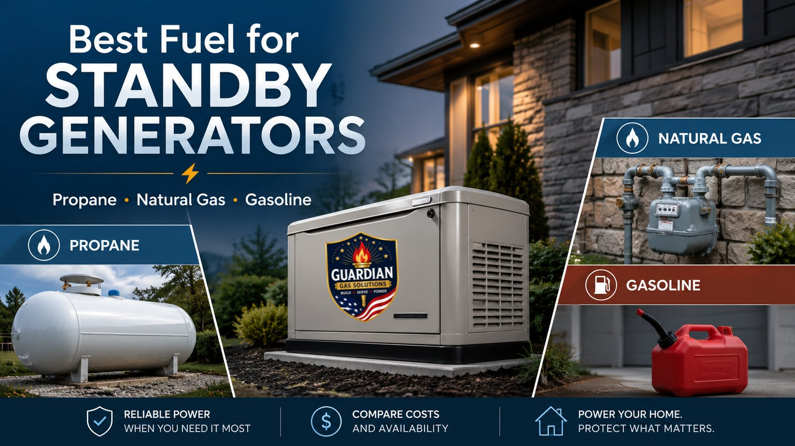
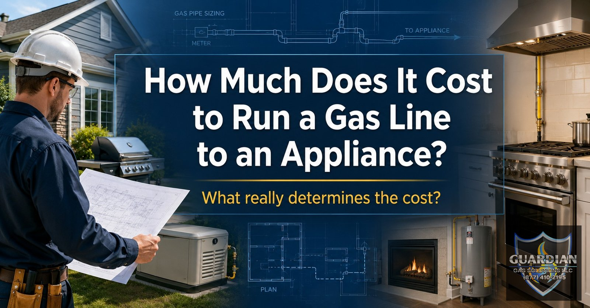
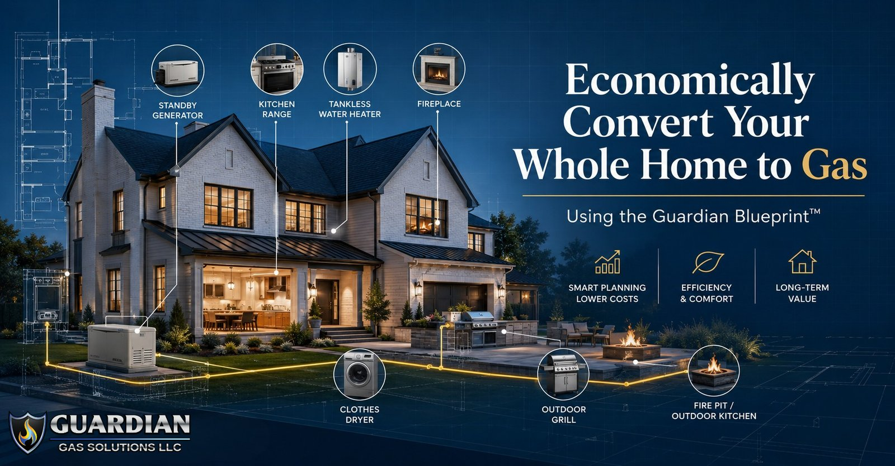
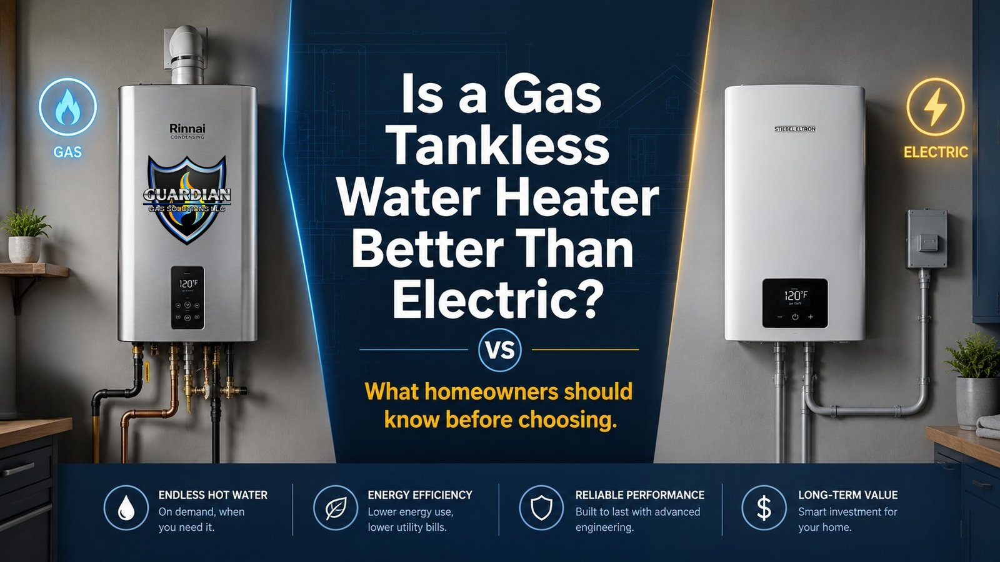
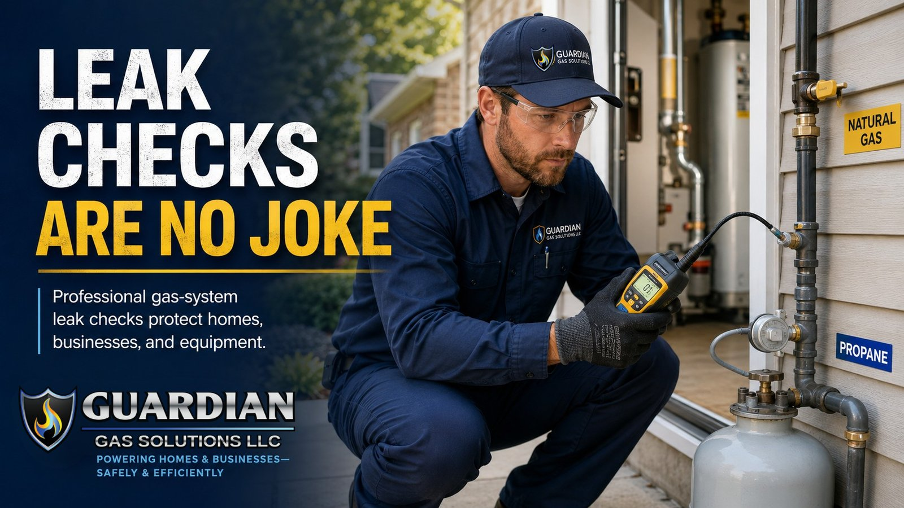
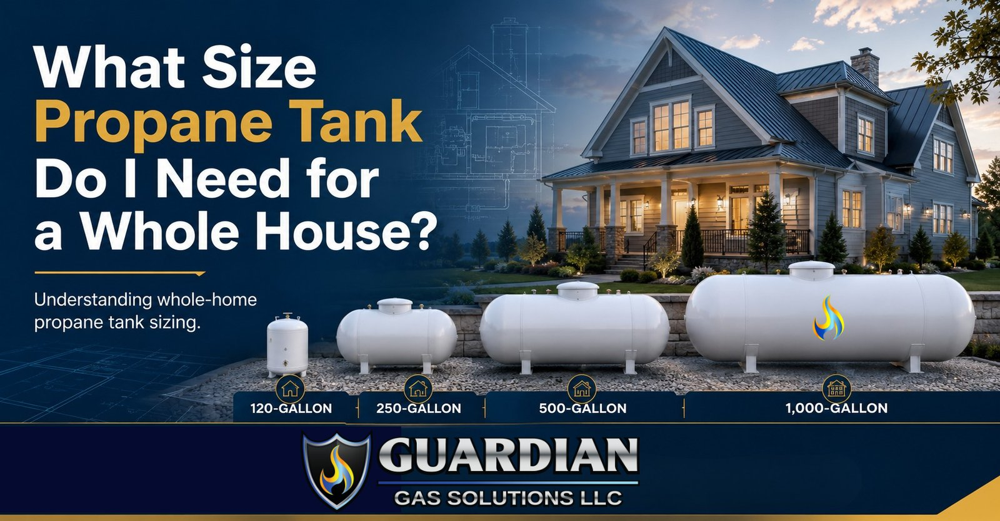

Straight answers from a licensed, master-qualified gas contractor. No hype — just what North & Central Florida homeowners, builders, and property managers actually need to know before they build, buy, or convert.

Propane, natural gas, and gasoline can all produce power during an outage — but they don't offer the same runtime, storage, or storm resilience. Here's how to choose.
Read article →
A gas line isn't just a pipe — it's a fuel delivery system. The true cost depends on far more than feet of pipe. Here are the five questions that determine it.
Read article →
The biggest mistake homeowners make is assuming every appliance must be installed at once. It doesn't. With one complete plan, you can phase the work to match your budget.
Read article →An outdoor kitchen adds comfort, convenience, and value — but the gas system should be part of the original design, not the final detail. Here's the 360-degree approach.
Read article →
Neither is automatically better — they're different tools for different applications. The right choice comes from understanding the whole system, not just the box on the wall.
Read article →
A gas leak doesn't have to be dramatic to be dangerous. Smelling gas is not the only warning sign — and 'I don't smell anything' is not a professional leak check.
Read article →
Tank size isn't based only on gallons or home size. It's determined by total energy demand, how appliances operate, vaporization rate, and future needs. Here's how sizing really works.
Read article →Whether you're scoping a whole-home conversion, a generator, or a single appliance hookup, we'll give you a straight answer. Serving Marion, Alachua, Levy, Lake, Sumter, Citrus, Hernando & Orange counties.